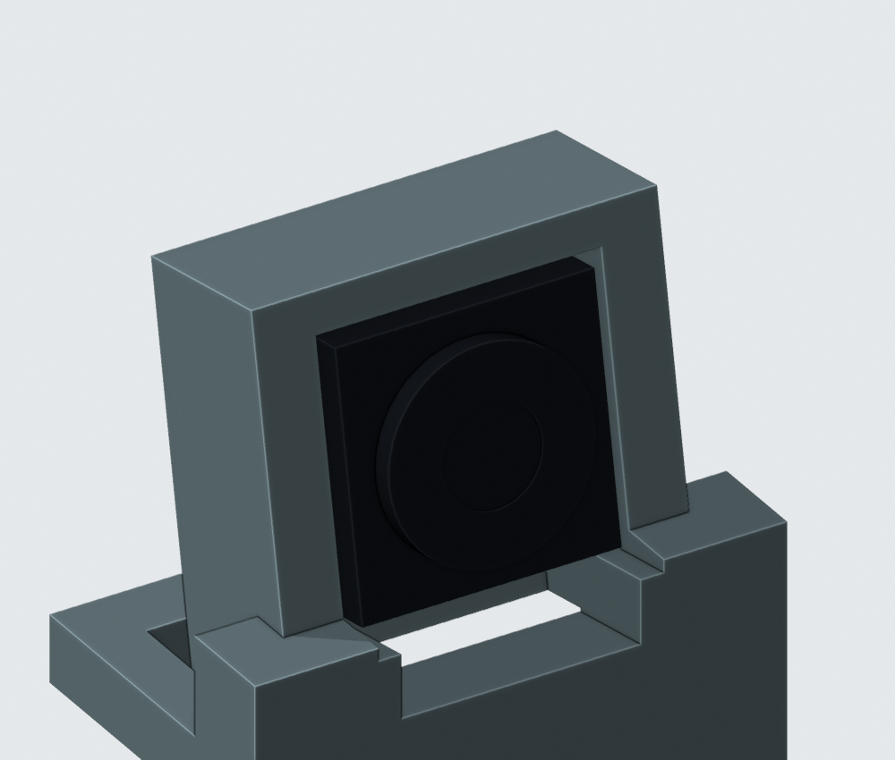
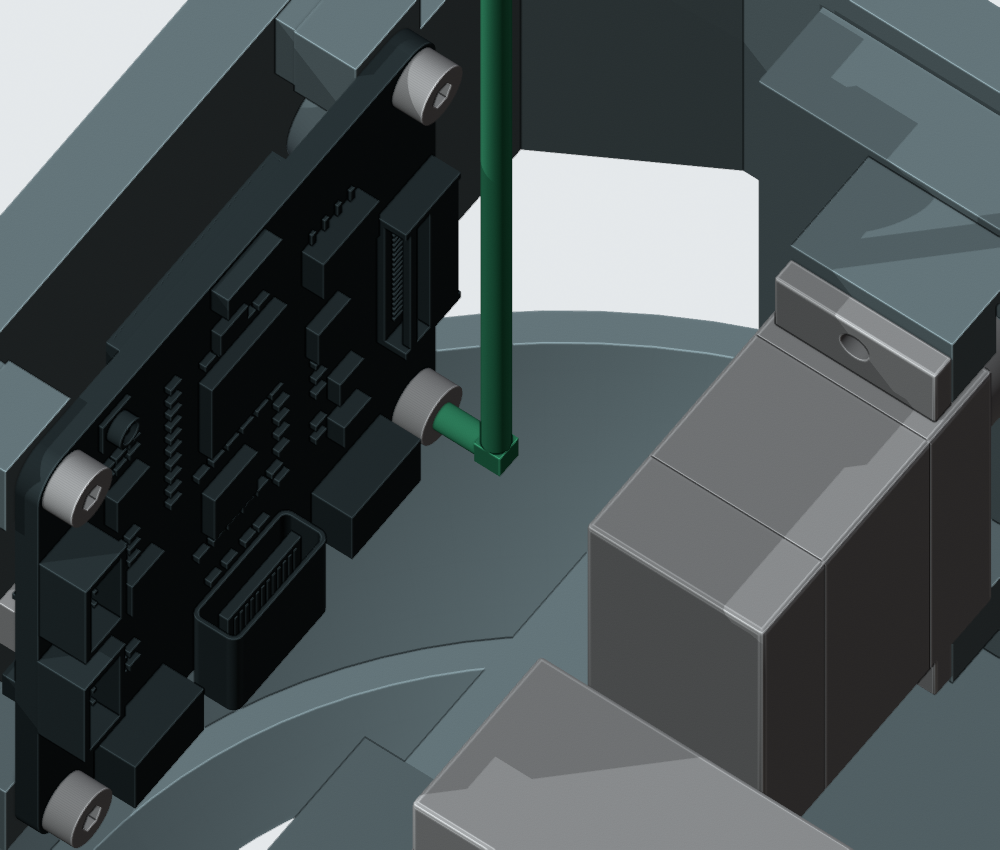

相机与CAM固定修正已应用
V1.2-M1.48 · 2026-10-05T03:47:05.183439+00:00
已按两项确认应用到主模型，修正范围仅Display_Frame及四枚CAM螺钉。Blender、STL、预览、电子细模和装配视频同步到V1.2-M1.48。
相机、孔轴、插座、嵌件与其余204件几何和位置保持。相机座名义顶壁1.2mm；当前相机尺寸仍含照片估算。

连续平直上沿，移除0.6mm外侧材料。
正式M2×5内六角与绿色短边工具包络。CAM安装方法
用1.5mm短边L扳手锁紧；参考Wera950PKLS05022040001，长边90mm、短边4.5mm。显示架和头壳后装。三枚螺钉可从上方送入；右下方CAM_Mount_Screw_2从前方沿轴线送入。工具包络有连续60°转动及8mm轴向空间，实际拧紧扭矩和工具弯角仍待到货验证。
本轮检查
五件与已确认候选的实体比对、其余204件逐件网格/位姿比对、相机三条具名装配路径、四枚螺钉与工具路径、130个头部姿态检查通过。零件数量保持；581份硬件原生源/合同哈希保持。
几何记录 · STL清单 · 执行命令 · 更新后的装配视频
仍未关闭
| 反力夹口初次装配 | 反力夹口局部薄边及初装仍未修复。M1.47局部实体复核（相关反力连接在M1.48保持）：直柄工具与头座相交约9.26mm³，反力件上移2mm与头座相交约18.13mm³；只是两条具体路线失败，不表示不存在其他方案。未采用失败的夹口候选；最终舵盘资料仍缺。 |
| 完整线束 | 四根CAM名义全长、上方暂存线尾及共同PH插头已建入。六个裸插头路径的局部结果保留；线长复核发现原H02/H04路径部分位置不够长。H02降低中段、提前接好的新候选通过201个开敞装入位置、408个身体位置、130个头部姿态；H01/H04的10根后装导线柔性送入仍未完成。后续头部装入与暂存线尾、扎带、人手工具、真实端子入壳、另7根跨关节线/FFC及完整连续顺序待完成。上部与颈部研究候选未应用，CAM内六角螺钉已于M1.48采用，当前无走线阶段工具/装入检查通过，裁线图未放行。 |
| 未定采购件与安装 | 现成软轮胎未定型。A7/C4已核对112封装、280焊盘、147过孔及机械接口同C3/A3；收到电源板39项视觉处置、70条引出说明和ERC/DRC零项报告。真实出线、带线取件及装后JP70/TP71维护仍未定。C4与PHC1均未应用正式板或主模型。 |
| 传动与插接资料 | SCS0009舵盘/短轴锁紧及线序视图、S288输出自攻螺钉、WeAct E孔针与插接长度、PHR8真实出线仍缺。A7补齐37行头部电气针脚及SH/GH目录候选；实际插合视图、相机完整FPC、USB尾线和压接过渡未确定，不能按目录候选冒充实物配套。 |
| 质量与驱动预算 | M1.48名义已建模质量1.324kg，超过1.0–1.2kg工程目标。两颗未布置制动电阻另计标称3.8g，候选部分合计1.327kg；未选模块、完整线束和热隔离固定仍缺。不是称重或动力学验证。 |
| 实物与打印验证 | CAM/相机照片估计细节、喇叭安装耳、电池与出线、排针排母实际插接、PA12配合和紧固、承载/蠕变/冲击、声学、温升与平衡需实物。 |
完整线束和供应商加工图尚未完成，未将任何走线候选应用到主模型。本轮是名义几何检查，实物配合、PA12强度和装配工艺未验证。